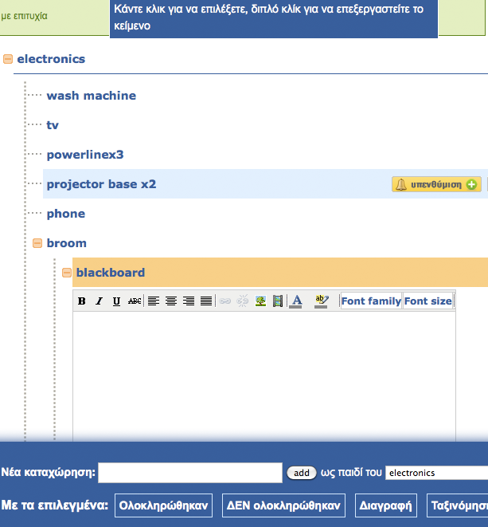

Χρησιμοποίησα σε διάφορες φάσεις το τελευταίο εξάμηνο το fishmemory.net, μια υπηρεσία η οποία σε βοηθάει να μην ξεχνάς πράγματα μέσω της πλέον διαδεδομένης μεθόδου της λίστας.
Λόγω μετακόμισης, έκανα πολλές λίστες και έτσι χρησιμοποίησα την εφαρμογή για να οργανώσω την όλη διαδικασία. Λάτρεψα το έξυπνο UI, και την πρωτότυπη προσέγγιση η οποία στην αρχή με ξένισε αλλά στην πορεία την συνήθισα και μου άρεσε. Επίσης στα περισσότερα σημεία της σελίδας υπάρχουν φιλικές και ευχάριστες οδηγίες για όσους φοβούνται την εξερεύνηση.
Η κάθε λίστα δεν είναι ακριβώς λίστα, είναι δέντρο. Το αντικείμενο μπορεί να έχει από κάτω του άλλα. Είναι κάτι που πρώτη φορά βρήκα σε site τέτοιου είδους, καθώς τα περισσότερα site με λίστες προσφέρουν μόνο flat listing.

Δύο άλλα πολύ βολικά features είναι ότι το κάθε αντικείμενο στη λίστα μπορεί να πάρει σημείωση και υπενθύμιση, βασικό για τους ξεχασιάριδες.
Σε επίπεδο λίστας τώρα, οι λίστες σαν σύνολο δέχονται υπενθυμίσεις. tags και έχουν την επιλογή να είναι ιδιωτικές ή δημοσιευμένες ή δημοσιευμένες σε συγκεκριμένα άτομα. Πολύ βολικό. Επίσης υποστηρίζεται εξαγωγή της λίστας σε csv και html, πράγμα επίσης πολύ χρήσιμο εάν θέλεις να δημοσιεύσεις μια λίστα στη σελίδα σου ή να πάρεις τα στοιχεία και να τα μεταφέρεις σε κάποια άλλη εφαρμογή.
Το μόνο πράγμα που θα ήθελα να είναι διαφορετικό στη κατά τα άλλα χρησιμότατη και χρηστικότατη υπηρεσία είναι να μπορείς να κάνεις reordering των αντικειμένων στη λίστα μόνο με drag and drop. Plsss!
Α, και τέλος, πρόκειται για ελληνική παραγωγή! Fractalbit.gr! webz author too!